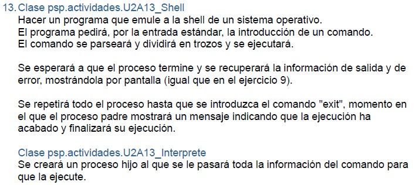
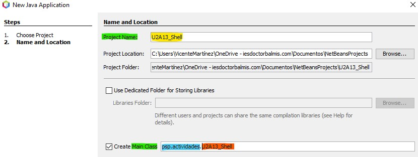
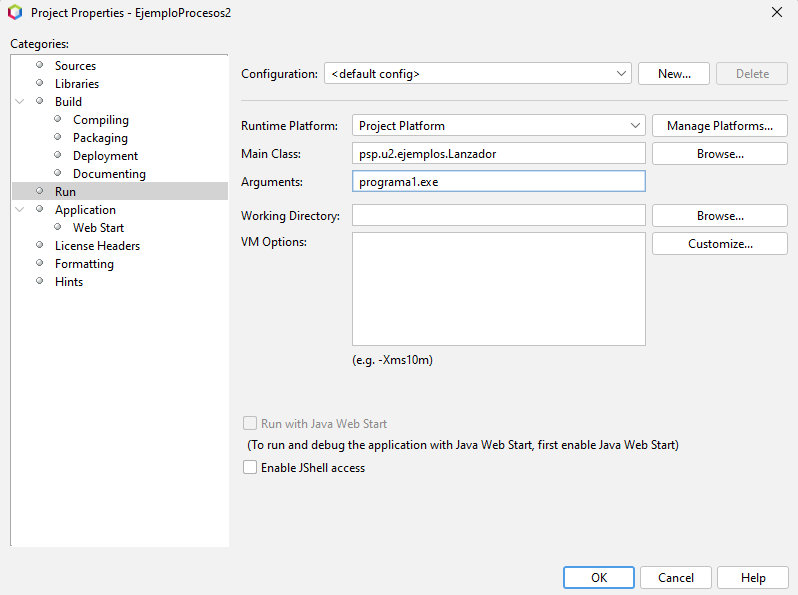

PSP - U2 Actividades auto evaluación
Índice
Cómo ponerle nombre a los proyectos, paquetes y clases en Netbeans
Si tenemos un enunciado como este

Esto significa que
- El nombre del proyecto en Netbeans debería ser U2A13_Shell (el nombre de la primera clase que aparece en el enunciado de la actividad).
- El paquete para cada clase que creemos tiene que ser psp.actividades.
- El nombre de las clases debería ser U2A13_Shell para la primera y U2A13_Interprete para la segunda.
Por lo tanto, en Netbeans configuramos el proyecto de la siguiente forma

Hay que recordar que en Java, el nombre de una clase es un nombre cualificado. Esto significa que podemos tener dos clases con el mismo nombre en paquetes diferentes. Así existe la clase java.lang.String y podríamos crear una clase psp.actividades.String, donde la parte final es igual pero el nombre (cualificado se entiende) es diferente para cada una y sirve para diferenciarlas. Por lo tanto, en el ejemplo anterior, el nombre que usamos para la clase es su nombre cualificados, esto es, psp.actividades.U2A13_Shell
1. Clase psp.actividades.LanzadorPrograma
Realiza un programa en Java que abra el bloc de notas (notepad) de Windows (la aplicación equivalente si estás en Linux/Mac) y muestre el mensaje “La aplicación se ha cerrado con éxito.” al cerrar la aplicación ejecutada si ésta ha terminado con código 0. En otro caso, que la aplicación muestre el mensaje "La aplicación ha finalizado con código xxx" donde se muestre el código devuelto por el proceso lanzado.
PATH del sistema
Recuerda que para poder ejecutar un programa indicando solo su nombre, éste debe estar en los directorios configurados en la variable PATH del sistema.
En otro caso, deberás indicar la ruta completa del ejecutable.
casos de prueba
¿Qué ocurre si intentas abrir una aplicación del sistema que no está en la variable PATH?
¿Qué ocurre si intentas abrir una aplicación que no existe en el sistema?
¿Qué ocurre si intentas abrir un archivo que no es ejecutable?
Es importante que compruebes qué ocurre en cada uno de los casos anteriores para que, cuando te pase en otros programas, sepas qué está ocurriendo.
Aplicaciones de Windows
¿Has probado a ejecutar notepad o calc desde el programa?
Deja la ventana de la aplicación abierta y comprueba la salida de la consola de tu programa. ¿Es normal ese comportamiento?
Algunas aplicaciones de Windows no funcionan como procesos, más bien son "pseudo-procesos" que no tienen el comportamiento esperado.
Puedes probar con otras apps como mspaint, wordpad, msinfo32.exe, etc.
Claves para resolver la actividad
En esta actividad, el programa que vamos a realizar va a lanzar un proceso externo. Para ello, vamos a usar la clase ProcessBuilder que nos permite lanzar un proceso externo y controlar su ejecución.
Para poder controlar la salida del proceso, vamos a usar el método waitFor() que nos permite esperar a que el proceso termine y obtener el código de salida del proceso.
Normas de nomenclatura
Es muy importante acostumbrarse a seguir las convenciones en programación, no sólo en cuanto a cómo nombrar clases, propiedades, métodos, ... sino también en cuanto a cómo llamar a los proyectos, paquetes y clases. Cuando trabajamos con un equipo de desarrolladores, debemos seguir todos las mismas normas. Y estas son las que propongo para PSP, a no ser que indique lo contrario en alguna actividad concreta.
El incumplimiento de estas reglas supondrá la reducción de la nota o la calificación como Incorrecta de las prácticas sin comprobar su funcionamiento ni su código.
2. Clase psp.actividades.U2A2_LanzadorEjecutable
A partir del ejercicio anterior, modifica el programa para que acepte un argumento que será el nombre del ejecutable a lanzar. El programa ejecutará el nuevo proceso y mostrará el mensaje "Aplicación finalizada" cuando el proceso haya terminado.
Argumentos de un programa
A diferencia de la primera clase, en la que tenemos que volver a compilar y ejecutar para probar a lanzar un proceso diferente, en este caso hemos parametrizado nuestro programa para que pueda recibir el nombre como argumento, permitiendo lanzar cualquier proceso sin tener que recompilar el programa.
Cuando una clase recibe un parámetro, estos le llegan en el parámetro args de la función main, un array de Strings que contiene todos los parámetros que se le han pasado.
Por ejemplo, cuando ejecutamos:
java paquete.pruebas.Clase1 5 hola
Lo que estamos haciéndole es pasar los valores 5 y “hola” como parámetros a la clase.
Para poder pasar argumentos a un programa Java desde Netbeans, tenemos que configurar los argumentos que queremos pasar al programa desde la propiedades del proyecto (File > Project properties) en el menú de ejecución del proyecto.

Claves para resolver la actividad
En este caso, nuestra aplicación debe comprobar si ha recibido un parámetro o no.
En caso de haberlo recibido, el parámetro tendrá que usarse para crear el proceso. En caso de no haberlo recibido, la aplicación deberá mostrar un mensaje de error y finalizar.
Rutas en los nombres
- ¿Qué ocurre si el nombre del ejecutable que pasamos como argumento tiene una ruta? ¿Funciona correctamente tu programa?
- ¿Qué ocurre si el programa que pasamos como argumento incluye otros argumentos o parámetros? ¿Funciona correctamente tu programa?
- ¿Puedes solucionar estos problemas? ¿Cómo? En el tema está la solución.
3. Clase psp.actividades.U2A3_LanzadorEjecutablesSimple
Modifica el programa anterior para que admita como parámetros de entrada más de una aplicación, las lance todas y espere a que todas terminen para mostrar el mensaje por pantalla "Aplicaciones finalizadas".
Claves para resolver la actividad
Como tiene que esperar a que todas terminen, no nos vamos a complicar y haremos un waitFor() por cada proceso que hayamos lanzado. De momento no nos interesa saber cuál acaba primero y cuál acaba más tarde, haremos la espera en el orden en el que las hayamos lanzado.
Ejecución secuencial o concurrente
- ¿Cómo estás haciendo que se ejecuten los procesos, secuencialmente o concurrentemente?
- ¿Lanzas un proceso, lo esperas, luego lanzas otro, lo esperas, ... y así sucesivamente? ¿O lanzas todos los procesos y después los esperas a todos?
- ¿Cómo haces para poder acceder a los procesos lanzados, para esperarlos después?
Pista
¡Bienvenidos al uso de las colecciones!
4. Clase psp.actividades.U2A4_LanzadorEjecutablesCompleto
Modifica el programa anterior para que nos pregunte, una a una, qué aplicaciones queremos cerrar desde nuestro programa en Java y cuáles dejar abiertas antes de terminar nuestro programa. La app dirá qué aplicaciones están cerradas, porque las hayamos cerrado desde nuestro programa o ya se hayan cerrado y cuáles están todavía abiertas antes de finalizar nuestro programa.
Claves para resolver la actividad
El programa, debe preguntar una vez, para cada proceso lanzado, si queremos cerrarlo o no.
Si decidimos cerrarlo, nuestro programa se encargará de finalizar el proceso, en otro caso, no hará nada.
Una vez haya preguntado por todos los procesos, nuestro programa mostrará una lista de los procesos lanzados, indicando si todavía está activo, o ya se ha cerrado (porque lo hayamos cerrado nosotros cuando nos ha preguntado o porque se haya cerrrado de forma manual). Después nuestro programa finalizará.
¿Cómo sabemos si un proceso se ha cerrado?
- ¿Cómo podemos saber si un proceso se ha cerrado o no?
- ¿Podemos saber si un proceso se ha cerrado de forma manual o lo hemos cerrado nosotros?
- ¿Cómo podemos saber si un proceso se ha cerrado de forma manual o se ha cerrado porque ha terminado su ejecución?
Haz pruebas con procesos que se cierren de forma manual y otros que terminen su ejecución. Evita que salten excepciones en tu programa. Captúralas y trátalas de forma adecuada.
Pista
En este ejercicio debes pensar muy bien qué estructuras de datos vas a usar para almacenar los procesos que has lanzado y cómo vas a acceder a ellos para poder cerrarlos o comprobar si siguen abiertos.
5. Clase psp.actividades.U2A5_LanzadorIpconfig
Realiza un programa en Java que ejecute el comando ipconfig a través de la consola del sistema operativo y muestre su resultado por pantalla.
Funcionalidad de proceso independiente vs proceso hijo
Como el proceso ipconfig es un ejecutable del sistema operativo, no podemos actuar sobre él ni modificar su funcionamiento. Este es una claro ejemplo de que un proceso/clase tiene que comportarse igual tanto si se lanza como proceso independiente como si se lanza desde otro proceso como proceso hijo.
Recuperar la salida de un proceso
Una vez tenemos el proceso lanzado, podemos recuperar su salida estándar (lo que normalmente veríamos en la consola si ejecutamos el comando directamente) y mostrarla por pantalla.
Para poder capturar la salida del proceso, vamos a usar el método getInputStream() que nos permite obtener un InputStream con la salida estándar del proceso.
Para leer la salida del InputStream, podemos usar el wrapper que os mostramos en los apuntes para recuperar de forma fácil, línea a línea, la salida del proceso.
Pista
En este ejercicio sólo tenemos que crear una clase, ya que el proceso que vamos a lanzar es el comando ipconfig del sistema operativo (ifconfig en Linux/Mac).
Para capturar la salida de un proceso, debes usar un InputStream que te permita leer la salida estándar del proceso.
Recuerda que puedes usar un BufferedReader para leer línea a línea la salida del proceso.
6. Clase psp.actividades.U2A6_LanzadorComandos
Realiza un programa en Java que admita como parámetro de entrada el comando a ejecutar en la consola del sistema operativo y muestre en pantalla el resultado.
Argumentos de un programa
Como en la actividad anterior, pretendemos que nuestro programa ejecute comandos del sistema operativo, pero en este caso, el comando a ejecutar lo pasamos como argumento al programa.
Recuerda que para pasar argumentos a un programa Java desde Netbeans, tenemos que configurar los argumentos que queremos pasar al programa desde la propiedades del proyecto (File > Project properties) en las opciones de ejecución (Run) del proyecto.
7. Clase psp.actividades.U2A7_ObtenerDireccionesIP
Modificar el ejercicio 5 para mostrar por pantalla únicamente las direcciones IPv4 que aparezcan en la salida del comando ipconfig. Deberás utilizar todos los métodos de String necesarios para extraer la información solicitada.
Pista
En este ejercicio, debes usar los métodos de la clase String para extraer las direcciones IP de la salida del comando ipconfig.
Recuerda que una dirección IPv4 tiene el formato xxx.xxx.xxx.xxx donde xxx es un número entre 0 y 255.
Puedes usar el método split para dividir la salida del comando en líneas y luego procesar cada línea para buscar las direcciones IP.
También puedes usar expresiones regulares para buscar las direcciones IP en la salida del comando.